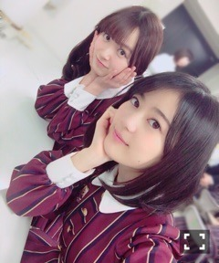

明治さんのYouTube公式チャンネルにて
中元日芽香「となりに座ったあの子と」篇が
公開されました～＼(^o^)／
一緒に飲んでる気持ちで
観てもらえたらなと思うので是非！
今日は生駒ちゃんお誕生日！
おめでとう～21歳！
落ち着いたらまた女子会するんだー♡♡
うちに来てくれるそうですo(^o^)o
果てない好奇心。彼女はいつも眩しいです。
今年もあと少しで
終わってしまうということで。
2016年もたくさんのことがありました！
私の個人的なトピックスだと
不等号、30部仲間入り、雑誌単独表紙、
成人、選抜復帰、サンエト、乃木團、CM。
一年前と比べると
状況や見る景色は随分変わったな～と
いう感じもしますが
あっという間だったな、というよりも
一歩一歩踏みしめて今ここに立っている
実感はあります。
新しい出会いや、悲しい別れが
たくさんあった一年でもありました。
きっと表裏一体なんだな～～
「サヨナラの意味」の歌詞が沁みますね。
このタイミングだからこの曲が歌える。
そんな気がしています( ˇωˇ )
そして何より
皆さんの声援のおかげで
充実した一年になりました！
今年は本当にそれを実感する機会が多くて。
握手会、ライブ会場、ミリオンもそう。
悔しい思い、喜び、達成感、
いろんな感情を一緒に共有できたのでは
ないかなと思います(^o^)
嬉しい報告ができるのは
皆さんの声援に応えられた！というのが
形として残るから幸せなことですね。
今年も本当にありがとうございました。
来年もよろしくお願いします。

紅白歌合戦観てね～＊
よしお年を。
(＊´・ω・＊)